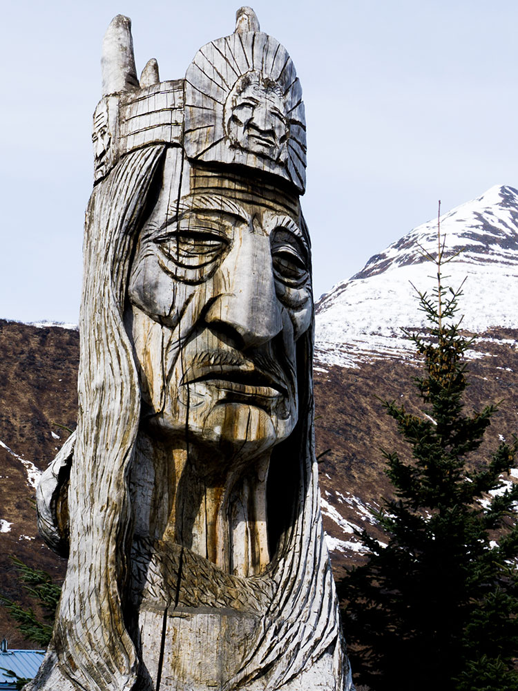

Coastal community set along a deep-water fjord surrounded by towering mountains, glaciers, and abundant marine and alpine wildlife.
Visitor information services typically available daily from 9am to 5pm
Local business hours vary by season
Costs vary for tours, activities, lodging, and excursions
How to Get There
From Anchorage (300 mi): Take AK-1 N (Glenn Highway) toward Glennallen, then follow AK-4 S (Richardson Highway) through Thompson Pass and Keystone Canyon directly into town.
Overview
Valdez is a port town at the head of a deep fjord in Prince William Sound, surrounded by some of the most dramatic mountain and glacier scenery in Alaska, and it is the southern terminus of the Trans-Alaska Pipeline. Its Alyeska Marine Terminal loads oil onto tankers, and it was the site of the Exxon Valdez oil spill in 1989. The town receives some of the heaviest snowfall in the world, and nearby Thompson Pass is a famous destination for heli-skiing and ice climbing.
Visitors come to Valdez for glacier and wildlife cruises on Prince William Sound, for the Columbia Glacier, and for the Valdez Museum. They also come for fishing for salmon and halibut, for the Worthington Glacier and Thompson Pass on the Richardson Highway, and for the Valdez Fish Derbies.
History
The Chugach Alutiiq people lived on Prince William Sound for thousands of years, and the Spanish explorer Salvador Fidalgo named the port Valdés in 1790. In 1898, thousands of prospectors landed in Valdez, hoping to cross the Valdez Glacier to the Klondike, and the town became the start of a trail to the Interior. On March 27, 1964, the Good Friday earthquake caused a submarine landslide that destroyed the waterfront, killing 32 people, and the town was rebuilt on safer ground four miles away. In 1977, the Trans-Alaska Pipeline began operating, and in March 1989 the oil tanker Exxon Valdez ran aground on Bligh Reef, spilling about 11 million gallons of crude oil.
Sightseeing and Popular Landmarks
The small boat harbor has tours to the Columbia Glacier, one of the largest tidewater glaciers in North America, and the Valdez Glacier Lake has icebergs. Worthington Glacier State Recreation Site, on the Richardson Highway, is accessible by a short trail to the ice, and Bridal Veil Falls and Horsetail Falls in Keystone Canyon are roadside waterfalls. The Alyeska Marine Terminal can be seen from a distance across the bay, and the Valdez Museum & Historical Archive has exhibits on the earthquake and pipeline.
Culture and Museums
The Valdez Museum has a working scale model of the old town, exhibits on the 1964 earthquake, and information on the Exxon Valdez spill, and the Maxine and Jesse Whitney Museum has a collection of Alaska Native artifacts and wildlife. The Last Frontier Theatre Conference in June draws playwrights, and the Valdez Gold Rush Days are in August. The Richardson Highway, one of the oldest roads in Alaska, passes through the area.
Parks
Prince William Sound is a vast area of fjords and islands, with kayaking and wildlife such as sea otters, whales, and sea lions, and the Chugach National Forest surrounds the town. Thompson Pass, 26 miles away, receives an average of 500 inches of snow a year and holds the state's record for annual snowfall, and its heli-skiing is world-famous. Keystone Canyon and Blueberry Lake are other scenic spots, and the Copper River is nearby.
Seasons and Weather
Valdez has a maritime climate with heavy precipitation. Summers are cool, with highs in the 60s°F, and winters are cold, with highs in the 20s and 30s°F and about 300 inches of snow. Summer is the main tourist season, and the winter snowfall can close the roads at times.
Things to Do
Experience the Gateway to Prince William Sound
Valdez is a picturesque coastal community surrounded by snow-capped mountains, waterfalls, glaciers, and the waters of Prince William Sound. Known for its scenic beauty and outdoor recreation opportunities, the city serves as a popular destination for travelers seeking hiking, wildlife viewing, fishing, kayaking, and glacier adventures.
Explore Prince William Sound
Prince William Sound is one of Alaska's premier marine destinations. Visitors can take boat tours, wildlife cruises, kayaking excursions, and glacier sightseeing trips to experience tidewater glaciers, fjords, waterfalls, and abundant marine wildlife including sea otters, whales, seals, and seabirds.
Visit the Solomon Gulch Hatchery
Located just outside of town, the Solomon Gulch Hatchery provides opportunities to learn about Alaska's salmon industry and fish conservation efforts. During summer months, visitors can observe salmon returning to spawn and often see sea lions and bald eagles gathering near the hatchery.
Discover Local Gold Rush History
Valdez played an important role during Alaska's gold rush era as a starting point for prospectors traveling into the interior. Historic trails, interpretive sites, and museums throughout the area highlight the community's rich history and pioneering heritage.
Enjoy World-Class Hiking
Valdez offers an extensive network of hiking trails ranging from easy coastal walks to challenging mountain routes. Hikers can enjoy waterfalls, alpine scenery, wildlife viewing, historic routes, and panoramic views of Port Valdez and the surrounding Chugach Mountains.
Drive Through Keystone Canyon
Just outside Valdez, Keystone Canyon features dramatic cliffs, waterfalls, and spectacular scenery. Visitors can easily stop to view Bridal Veil Falls and Horsetail Falls, two of the area's most photographed natural attractions.
Experience Outdoor Adventure
The Valdez area offers opportunities for kayaking, fishing, glacier cruises, mountain biking, wildlife photography, backcountry exploration, and winter recreation. Its combination of ocean, mountains, and glaciers makes Valdez one of Alaska's most versatile adventure destinations.
Top Trails
Dock Point Trail
Length: Less than 1 mile round trip
Elevation Gain: Minimal
Difficulty: Easy
This family-friendly trail follows a peninsula between Duck Flats and Port Valdez. It is known for birdwatching opportunities, bald eagle sightings, and scenic coastal views.
Civic Center Overlook Trail
Length: Approximately 1 mile round trip
Elevation Gain: Moderate
Difficulty: Easy to Moderate
Also known as the Overlook Trail, this short hike climbs above town and rewards visitors with panoramic views of Valdez, Port Valdez, and the surrounding mountain scenery.
Mineral Creek Trail
Length: Varies by destination
Elevation Gain: Moderate
Difficulty: Moderate
Following Mineral Creek Canyon, this historic trail passes through scenic mountain terrain and leads toward remnants of early mining activity, including an abandoned stamp mill associated with the region's gold rush history.
Shoup Bay Trail
Length: Approximately 11-12 miles round trip to Shoup Bay
Elevation Gain: Moderate
Difficulty: Moderate to Strenuous
One of the area's signature wilderness hikes, Shoup Bay Trail travels through coastal forests and remote backcountry terrain, eventually reaching views of Shoup Glacier and Prince William Sound.
Sources: Discover Valdez official visitor information covering hiking trails, historic routes, Dock Point Trail, Mineral Creek Trail, Shoup Bay Trail, the Trail of 1898, and outdoor recreation opportunities throughout the Valdez area.
Discover Valdez - Hiking Trails
Additional information verified through City of Valdez trail resources and visitor information covering the community trail network, Prince William Sound recreation, Civic Center Overlook Trail, and other outdoor activities available in and around Valdez.
City of Valdez - Trails & Maps
This article uses material from Wikipedia as well as information from official tourism and institutional sources. Key references include Valdez Convention & Visitors Bureau, Valdez Museum & Historical Archive, Travel Alaska, Chugach National Forest, and National Weather Service Anchorage. Wikipedia material is from the articles "Valdez, Alaska" and "Exxon Valdez oil spill", and is available under the Creative Commons Attribution-Share-Alike License 3.0.
